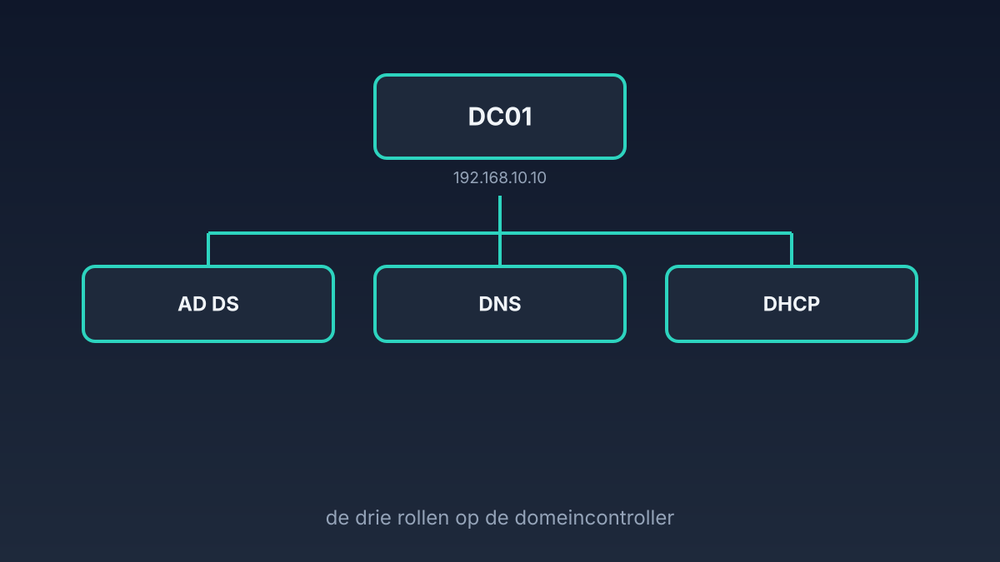
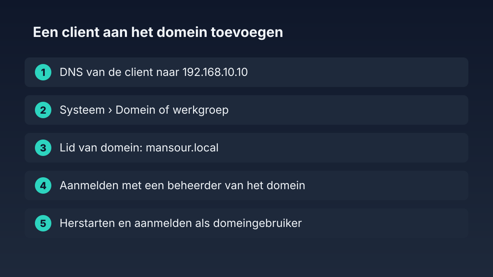
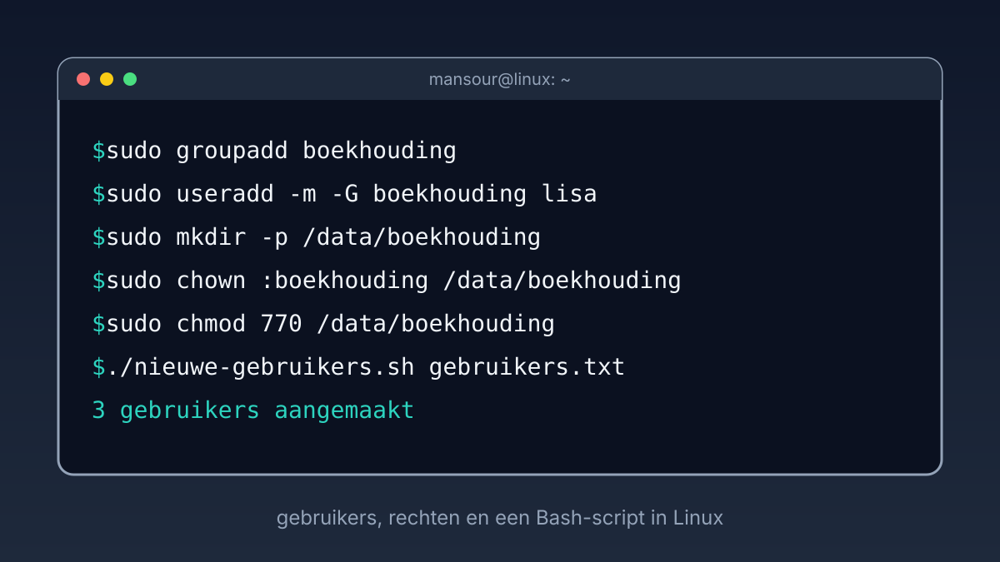

Projecten
Mijn projecten in detail
Hier lees je per project wat ik maakte en wat ik ervan leerde.
Project 1
Serverbeheer



Projectbeschrijving
Voor deze opdracht heb ik een gesimuleerd bedrijfsnetwerk opgezet met meerdere virtuele machines in VMware Workstation Pro. Eén centrale server met Windows Server 2025 beheert het netwerk, en verschillende clients met Windows 11 zijn ermee verbonden. Zo kan ik alles vanuit één punt beheren, net zoals in een echt bedrijf.
Eerst heb ik de virtuele machines aangemaakt en in een eigen intern netwerk gezet. Daarna heb ik Windows Server 2025 geïnstalleerd en de server gepromoveerd tot domeincontroller voor het domein mansour.local. Met Active Directory heb ik organisatie-eenheden, gebruikers en groepen aangemaakt. DNS zorgt ervoor dat de clients het domein vinden, en DHCP geeft ze automatisch een IP-adres.
Ten slotte heb ik de clients lid gemaakt van het domein en me aangemeld met een domeingebruiker. Het lastigste was DNS: zolang de clients de server niet als DNS-server gebruikten, vonden ze het domein niet. Toen dat opgelost was, werkte de rest vlot.
Projectinformatie
Dit project behandelt de basis van serverbeheer in een Windows-omgeving: virtualisatie, Active Directory, DNS en DHCP. Ik heb ervaring opgedaan met het opzetten van een domein, het beheren van gebruikers en groepen, en het koppelen van clients aan een centrale server.
Zo'n opstelling vormt de basis van bijna elk bedrijfsnetwerk. Doordat alles virtueel draait, kan ik veilig testen en fouten maken zonder echte toestellen of een echt netwerk te raken.
Tools: VMware Workstation Pro, Windows Server 2025, Active Directory, DNS, DHCP, Windows 11
Project 2
Webtechnologie

Projectbeschrijving
Voor deze opdracht heb ik de website gebouwd die je nu bekijkt. Ik begon met inspiratie en wireframes, en bouwde daarna elke week een stuk verder: de pagina's in HTML, de opmaak met Tailwind CSS, een menu voor de gsm, een contactformulier en ten slotte het online zetten.
Projectinformatie
Dit project behandelt HTML, Tailwind CSS, responsive design, formulieren en toegankelijkheid. De site werkt op gsm, tablet en laptop, en is ook met alleen het toetsenbord te gebruiken. Met Git en GitHub bewaar ik elke versie, en Netlify zet de site automatisch online.
Tools: HTML, Tailwind CSS, VS Code, Git, GitHub, Netlify
Project 3
Scripting

Projectbeschrijving
Voor deze opdracht heb ik met Linux gewerkt en verschillende systeembeheertaken uitgevoerd via commandline. Ik heb gebruikers aangemaakt, hun permissies beheerd, en shell scripts geschreven voor geautomatiseerde taken. Ik leerde hoe je met chmod en chown gebruikers- en groepsrechten toewijst en verwijdert, en hoe je scripts schrijft voor repetitieve processen. Dit project gaf mij waardevol inzicht in Linux systeembeheer, scriptautomatisering en veiligheid door juist rechtenbeheer.
Projectinformatie
Dit project behandelt Linux commandline operaties en shell scripting. Ik heb ervaring opgedaan met user management, file permissions (chmod/chown), directory structures en het schrijven van Bash scripts voor geautomatiseerde systeemtaken. Het project demonstreert fundamentele Linux systeembeheer vaardigheden die essentieel zijn voor systeemadministratoren en developers. Scripts kunnen gebruikt worden voor backup, logging, monitoring en andere repetitieve taken.
Tools: Linux, Bash, chmod, chown